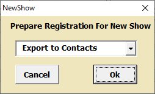
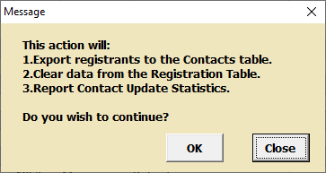
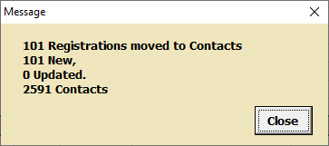
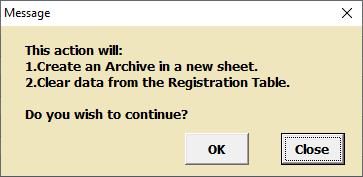
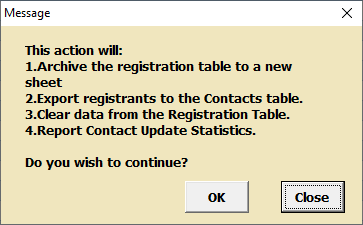

Car Show Helper New Show Dialog. "New Show" does not change the show "Settings"
New Show clears the registation sheet. It has options for recording the show data. The options shown below all warn the user of the actions to be performed.
Export to Contacts

New Show Export Warning.

Exported Statistics.
The example report shows that 101 new contacts have been added to the
Contacts sheet for a total of 2591 unique contacts. If an
exported owner first and last name, and car year, make, model already exist in the Contacts sheet the timestamp and contact info fields are updated with the current data.
Archive to New Sheet

New Show Archive Warning.
The Archive tool will prompt you for a name for your new archive sheet. Archives sheets contain an exact copy of the registration data in locked cells.
Archive & Export

New Show Archive & Export Warning.